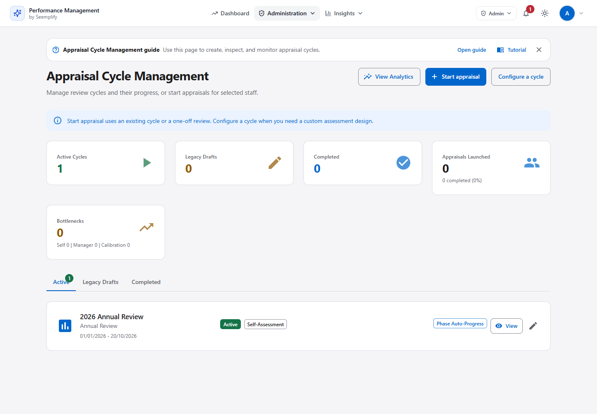
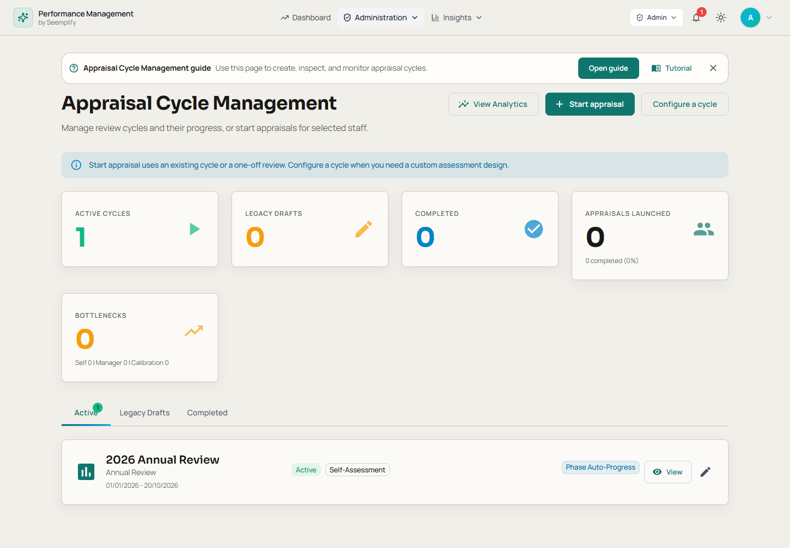

02 /action-centre
Refined. Two-level navigation and empty content are unchanged; no task consolidation claimed. View shared design concept
03 /admin
Same sparse charts/drilldown rows in both versions. Long-page information density largely retained. Polished operational panels. View shared design concept
04 /admin/appraisal-cycles
Fifth metric wraps to a new desktop row; retained existing composition. Polished. View shared design concept
Before · matched pre-redesign build Final · implemented application
Final · implemented application
06 /admin/appraisal-cycles/[id]/edit
Editor remains long; no compact redesign claimed. Disabled frozen fields intentionally subdued. Polished, density largely unchanged. View shared design concept
07 /admin/appraisal-cycles/new
Screenshot is first step, not every editor state/mobile. Polished first step. View shared design concept
08 /admin/calibration
Same no-sessions task on both sides; decision detail remains separate QA evidence. Polished empty session list. View shared design concept
09 /admin/departments/[department]
Sparse rows/empty goals; no dense mobile table claim. Polished desktop. View shared design concept
10 /admin/reports
Same populated counts/charts now compared fairly. Improved metric hierarchy; chart data semantics unchanged. View shared design concept
11 /admin/review-cycles
No independent new legacy screen. Polished destination, not extra functionality. View shared design concept
Before · matched pre-redesign build
Final · implemented application
13 /analytics
Long technical subtitle persists; mobile remains tall. Polished panels/controls in desktop, dark and 390px; no changed analytics meaning. View shared design concept
14 /appraisals
Dense metadata remains; no information was removed solely to look cleaner. Polished, including real history extra. View shared design concept
Before · matched pre-redesign build Final · implemented application
Final · implemented application
15 /appraisals/[appraisalId]
Same waiting-for-employee task/controls in both sources. Polished hierarchy; no loading-success claim. View shared design concept
16 /appraisals/[appraisalId]/calibration
No same-task decision form screenshot here. Polished prerequisite state; decision-layout improvement unproven. View shared design concept
17 /appraisals/[appraisalId]/discussion
Current body remains lengthy; desktop read-only state only. Polished, not a new discussion layout. View shared design concept
18 /appraisals/[appraisalId]/final-review
Same business component and unavailable-evidence fixture. Disabled affordance is improved; successful finalization is separate real-API evidence. View shared design concept
19 /appraisals/[appraisalId]/goal-setting
Single synthetic captured goal; large goal set not shown. Polished. View shared design concept
20 /appraisals/[appraisalId]/manager-review
Same supporting documents and employee summary; editable extra also compared. Narrow stage list stays readable. Polished. View shared design concept
21 /appraisals/[appraisalId]/report
Same source/participant report data in matched capture; print was separately inspected. Polished report, no new report-content claim. View shared design concept
22 /appraisals/[appraisalId]/self-assessment
Submitted-state composition mostly unchanged. Dark/mobile submitted state reviewed; editable mobile is covered by functional suites rather than this screenshot set. Polished. View shared design concept
23 /appraisals/removed
Both show the same honest empty state; no populated restore-row proof here. Polished empty state. View shared design concept
24 /appraisals/start
Matched staff/filter task in both builds. Dark/390px labels and controls remain readable. Polished wizard. View shared design concept
26 /coaching
Improved. Queue placement and coverage density are unchanged; no broader prioritization algorithm change. View shared design concept
27 /competency
Improved. Preparation remains long-form; no role-library table is introduced here. View shared design concept
Before · matched pre-redesign build
Final · implemented application
28 /competency/assessments
Refined. Identity, role and reviewer ordering is retained; no new list layout. View shared design concept
Before · matched pre-redesign build
Final · implemented application
29 /competency/assessments/[assessmentId]
Improved. Three-column structure, long rationale flow and disabled/manual states are retained; no claim of shorter completion time. View shared design concept
Before · matched pre-redesign build
Final · implemented application
30 /competency/cycles
Improved. No populated cycle-row comparison. View shared design concept
Before · matched pre-redesign build
Final · implemented application
31 /competency/cycles/[id]
Improved. Same name and selected input fixture. Stage/field order and scoring workflow remain unchanged. View shared design concept
Before · matched pre-redesign build
Final · implemented application
32 /competency/cycles/new
Improved. Stepper sequence and field order remain; no scoring/configuration redesign. View shared design concept
Before · matched pre-redesign build
Final · implemented application
33 /competency/frameworks
Improved. No populated framework rows in paired evidence. View shared design concept
Before · matched pre-redesign build
Final · implemented application
34 /competency/frameworks/[id]
Improved. Same saved name/criteria/native-level counts. No source-content or publication feature added. View shared design concept
Before · matched pre-redesign build
Final · implemented application
35 /competency/frameworks/new
Improved. Definition/Criteria/Native levels workflow is unchanged; sticky footer is not a new layout. View shared design concept
Before · matched pre-redesign build
Final · implemented application
36 /competency/reports
Refined. No cohort records are present in either image; population/readability of a large report table is untested by this pair. View shared design concept
Before · matched pre-redesign build
Final · implemented application
37 /competency/reports/[assessmentId]
Refined. Both sides use the same published result. Report structure and available evidence are unchanged; this is not new reporting functionality. View shared design concept
Before · matched pre-redesign build
Final · implemented application
38 /competency/roles
Improved. Readable cards retained; unavailable numeric version omitted. Matched populated evidence is linked in the growth review. Gallery shows the matched populated role-library state; both stages use identical aggregate fixtures. View shared design concept
Before · matched pre-redesign build
Final · implemented application
39 /competency/roles/[id]
Improved. Same saved name/expectation fixture. Responsibilities and version workflow are preserved, not redesigned. View shared design concept
Before · matched pre-redesign build
Final · implemented application
40 /competency/roles/new
Refined. Same choice panel and workflow, not a new wizard. View shared design concept
Before · matched pre-redesign build
Final · implemented application
41 /competency/settings
Improved. Long form and sticky save behavior are retained; full-page screenshot places the sticky bar mid-image because it reflects the initial viewport. View shared design concept
Before · matched pre-redesign build
Final · implemented application
42 /competency/strategies
Improved. Same strategy row on both sides. Actual missing role/framework versions are omitted rather than inferred from revision or IDs. View shared design concept
Before · matched pre-redesign build
Final · implemented application
43 /competency/strategies/[id]
Improved. Same record/version fixture; no new criteria, link or publication behavior. View shared design concept
Before · matched pre-redesign build
Final · implemented application
44 /competency/strategies/new
Improved. No structural shortening or new strategy feature is claimed. View shared design concept
Before · matched pre-redesign build
Final · implemented application
45 /dashboard
Concept uses larger heading/filled actions; current links are intentionally quieter. Dark and 390px also reviewed. Improved. View shared design concept
Before · matched pre-redesign build
Final · implemented application
46 /development
Refined. Same empty My Plans/populated Team count fixture. Learning summary totals are absent in both fixture responses; no numeric-content acceptance claimed. View shared design concept
Before · matched pre-redesign build
Final · implemented application
47 /feedback
Improved. Six-view navigation and card structure remain; no new information architecture. View shared design concept
Before · matched pre-redesign build
Final · implemented application
48 /feedback/new
Improved. Field order is retained; no claim that sending is faster from a screenshot. View shared design concept
Before · matched pre-redesign build
Final · implemented application
49 /login
Desktop error state compared; provider success is separate. Improved. View shared design concept
Before · matched pre-redesign build
Final · implemented application
50 /okrs
Empty organization state alone cannot prove dense-list quality; populated extra reviewed. Dark/mobile preserve local tabs. Polished. View shared design concept
Before · matched pre-redesign build
Final · implemented application
51 /okrs/alignment
Both are empty hierarchy; populated/large tree visual improvement unproven. Polished empty state. View shared design concept
Before · matched pre-redesign build
Final · implemented application
52 /one-on-ones
Refined. Same populated calendar/list fixture and actor; the long connection explanation remains, so no structural simplification claimed. View shared design concept
Before · matched pre-redesign build
Final · implemented application
53 /one-on-ones/[meetingId]
Refined. Same scheduled meeting/state on both sides. Repeated connection explanation still takes substantial space before Join call. View shared design concept
Before · matched pre-redesign build
Final · implemented application
54 /one-on-ones/new
Refined. Same actor/calendar state and form order; automatic date/time differs only by capture time. View shared design concept
Before · matched pre-redesign build
Final · implemented application
55 /project-feedback
Refined. Same task order and empty state; no populated project-row redesign claimed. View shared design concept
Before · matched pre-redesign build
Final · implemented application
56 /recognition
Improved. Empty feed only; contribution-message row hierarchy is not evidenced here. View shared design concept
Before · matched pre-redesign build
Final · implemented application
57 /reviews
Do not call this screenshot an assigned-review editor. Polished destination only. View shared design concept
Before · matched pre-redesign build
Final · implemented application
58 /reviews/[id]
Same synthetic self/manager/peer content and zero-versus-rating distinction retained. Polished historical report. View shared design concept
Before · matched pre-redesign build
Final · implemented application
59 /settings/ai
Improved. Runtime/content groups stay in the same order. No real gateway generation is inferred. View shared design concept
Before · matched pre-redesign build
Final · implemented application
60 /support-plans
Refined. Existing queue/filter/decision sequence is retained. View shared design concept
Before · matched pre-redesign build
Final · implemented application
61 /talent
Improved. Nine-box composition and evidence table are retained; no claim of a redesigned talent model. View shared design concept
Before · matched pre-redesign build
Final · implemented application
62 /team
Improved responsive readability. Normal and long-name states verified at390/768/1440 in both themes; metric/action separation and Guide/New1:1 bounds pass. View shared design concept
Before · matched pre-redesign build
Final · implemented application
63 /team/[userId]
This audit's profile capture is desktop only. Polished desktop; mobile judgment not inferred. View shared design concept
Before · matched pre-redesign build
Final · implemented application
64 /team/appraisals
Desktop populated row compared; no new narrow-table proof here. Polished desktop. View shared design concept
Before · matched pre-redesign build Final · implemented application
Final · implemented application
65 /team/feedback
Refined. The empty-data structure and three metric cards are unchanged; no populated table comparison. View shared design concept
Before · matched pre-redesign build
Final · implemented application
66 /team/okrs
Same goal data now compared. Improved contrast/readability; final delta provides 760px named local table and actual keyboard action proof. View shared design concept
Before · matched pre-redesign build
Final · implemented application
67 /team/reviews
No independent reviewer workflow newly created. Polished destination. View shared design concept
Before · matched pre-redesign build
Final · implemented application
68 /tutorial
Refined. Introductory callout and long sequential walkthrough remain. No material restructuring of tutorial content. View shared design concept
Before · matched pre-redesign build
Final · implemented application